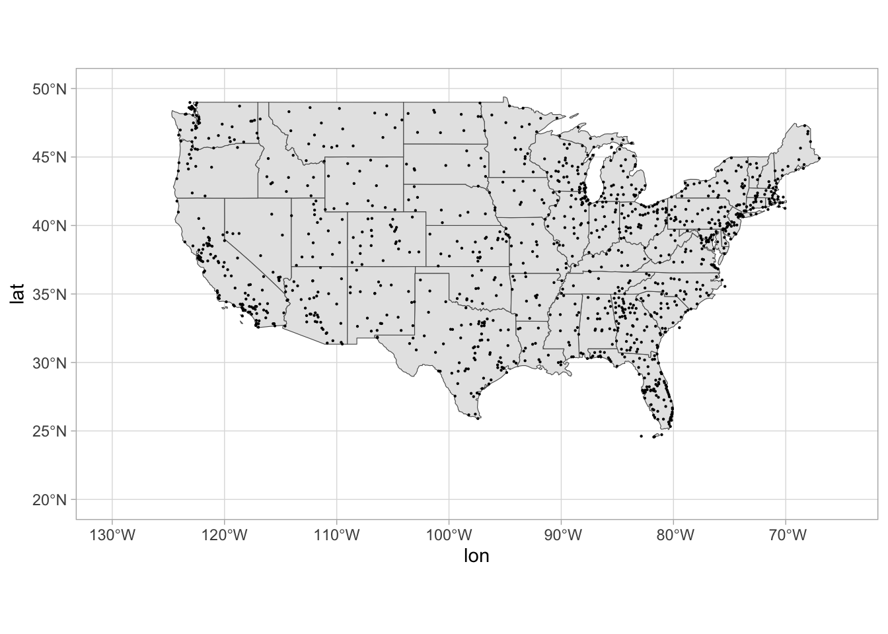
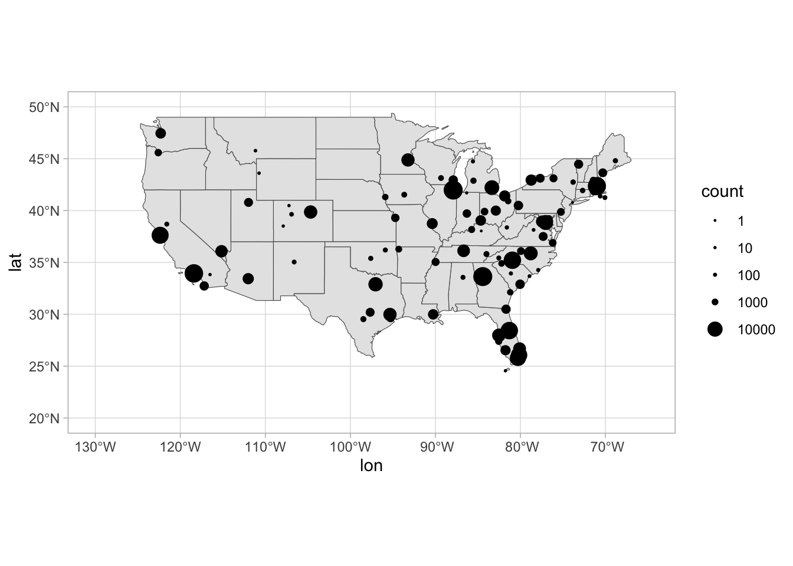

#LOAD PACKAGES
library(tidyverse)
library(sf) #this is a package needed so R can work with sf objects
#LOAD DATA
library(spData) #this packages contains the dataset (with sf objects) that we will be using today
data("us_states")STAT 118: Notes L
Plotting Points on Maps
More sf maps with points
Recall our map of the continential US which shows the state borders.
us_states %>%
ggplot() +
geom_sf() +
theme_light()
Recall the nycflights13 dataset which had all kinds information about all the flights out of NYC airports in 2013. Check out the airports dataset, which has the latitude and longitude of all airports in the USA.
library(nycflights13)
data(airports)Suppose we want to plot these onto our map:
us_states %>% ggplot() +
geom_sf() +
theme_light() + geom_point(data=airports, aes(x=lon, y=lat), pch=19, size=0.1) +
coord_sf(xlim = c(-130, -65),ylim = c(20,50))
What if we wanted to have each dot size represent the number of flights that flew to those airports from NYC? First we need the data:
data(flights)
dest_count <- flights %>%
group_by(dest) %>%
summarize(count=n())Then we need to merge this data into the airports dataset:
airports_count <- airports %>%
inner_join(dest_count, by=c("faa"="dest"))Then we can add it to our plot:
us_states %>%
ggplot() +
geom_sf() +
theme_light() +
geom_point(data=airports_count, aes(x=lon, y=lat, size=count)) +
scale_size(range = c(0.2,5), breaks=c(0,1,10,100,1000,10000,100000))+
coord_sf(xlim = c(-130, -65),ylim = c(20,50))
Leaflet
Leaflet is one of the most popular open-source JavaScript libraries for interactive maps.
library(leaflet)You create a Leaflet map with these basic steps:
- Create a map widget by calling leaflet().
- Add layers (i.e., features) to the map by using layer functions (e.g.
addTiles,addMarkers,addPolygons) to modify the map widget. - Repeat step 2 as desired.
Using OpenStreet Maps
A simple map of Warner Hall:
leaflet() %>%
addTiles() %>%
# Add default OpenStreetMap map tiles
addMarkers(lng=-73.175, lat=44.010, popup="Warner Hall")A map of all airports in the USA:
leaflet(data=airports_count) %>%
addTiles() %>% # Add default OpenStreetMap map tiles
addMarkers(lng=~lon, lat=~lat, popup=~faa)or using Circle Markers:
leaflet(data=airports_count) %>%
addTiles() %>%# Add default OpenStreetMap map tiles
addCircleMarkers(lng=~lon, lat=~lat, popup=~faa, radius = ~count/1000, stroke =FALSE, fillOpacity =0.5)